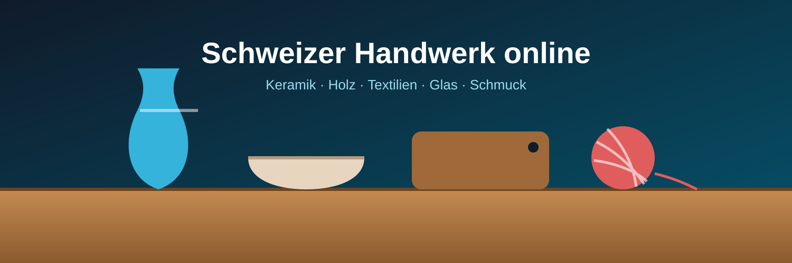

Handwerk online kaufen: Schweizer Artisan-Shops im Vergleich
Handwerk online zu kaufen bedeutet, Keramik, Holzarbeiten, Textilien oder Schmuck direkt bei kleinen Ateliers und Manufakturen zu bestellen, statt bei grossen Versandhändlern. Für Kundinnen und Kunden in der Schweiz öffnet das den Zugang zu Einzelstücken, regionalen Materialien und Produkten, die man im Detailhandel kaum findet.
Auf dieser Seite zeigen wir, worauf es beim Online-Kauf von Handgemachtem ankommt, welche Kategorien es gibt, wie Versand und Rückgabe funktionieren und welche Shops in unserem Vergleich überzeugen.

Top Schweizer Artisan-Shops 2026
Handwerk online kaufen heisst, bei einem Atelier oder einer kleinen Manufaktur direkt zu bestellen und das Stück per Post nach Hause zu erhalten. Bezahlt wird in Franken per Karte, TWINT oder Rechnung, und viele Shops bieten Geschenkverpackung und persönliche Beratung an.
Der Unterschied zum Massenhandel zeigt sich vor allem in der Herkunft: regionale Materialien, nachvollziehbare Herstellung und Stücke, die es so nur einmal gibt.
Artisan-Shops im Vergleich 2026
Die Tabelle unten zeigt die Shops aus unserem Vergleich mit ihren wichtigsten Merkmalen für den Einkauf.
| Shop | Kategorie | Sortiment | Unikate | Lieferzeit | Gratis Versand ab | Rückgabe | Sprachen | Stärke |
|---|---|---|---|---|---|---|---|---|
| Atelier Alpenholz | Holz | 420+ | Ja | 2 bis 4 Tage | CHF 80 | 30 Tage | DE, FR | Grösstes Sortiment |
| Keramik Zürisee | Keramik | 310+ | Ja | 1 bis 3 Tage | CHF 60 | 30 Tage | DE, EN | Schnellster Versand |
| Wollwerk Bern | Textil | 260+ | Teilweise | 3 bis 10 Tage | CHF 100 | 14 Tage | DE, FR, IT | Massanfertigung |
| Glasatelier Luzern | Glas | 180+ | Ja | 3 bis 5 Tage | CHF 120 | 14 Tage | DE | Beste Verpackung |
| Silberschmiede Ticino | Schmuck | 150+ | Ja | 5 bis 7 Tage | Immer | 30 Tage | IT, DE | Gravur inklusive |
Die Tabelle hilft beim Vergleich von Sortiment, Lieferzeit, Versandkosten und Rückgabe.
Warum Handgemachtes online kaufen?
Für den Online-Kauf bei Ateliers sprechen mehrere praktische Gründe:
- Einzigartige Stücke: Unikate und Kleinserien statt Massenware.
- Regionale Herkunft: Materialien und Herstellung aus der Schweiz.
- Direkter Kontakt: Fragen gehen direkt an die Person, die das Stück gefertigt hat.
- Personalisierung: Gravuren, Farben und Masse nach Wunsch.
- Nachhaltigkeit: langlebige Produkte und kurze Transportwege.
Ist Online-Shopping bei kleinen Ateliers sicher?
Ja, wenn der Shop ein vollständiges Impressum, klare AGB und sichere Zahlungsarten anbietet. Diese Merkmale helfen bei der Einschätzung:
| Sicherheitsmerkmal | Worauf achten | Warum es zählt |
|---|---|---|
| Impressum | Name, Adresse und UID-Nummer | Zeigt, wer hinter dem Shop steht |
| SSL-Verschlüsselung | HTTPS in der Adresszeile | Schützt Daten und Zahlungen |
| Zahlung auf Rechnung | Bezahlen nach Erhalt der Ware | Kein Risiko bei Vorauszahlung |
| Rückgaberecht | Klare Frist in den AGB | Sicherheit bei Fehlkäufen |
| Bewertungen | Unabhängige Kundenmeinungen | Zeigt echte Erfahrungen |
Kategorien im Überblick
Artisan-Shops gliedern ihr Angebot in klar getrennte Bereiche. Die Tabelle zeigt, was Sie erwartet.
| Kategorie | Beispiele | Preisbereich | Typische Lieferzeit |
|---|---|---|---|
| Keramik & Porzellan | Tassen, Schalen, Vasen | CHF 25 bis 180 | 1 bis 5 Tage |
| Holzarbeiten | Schneidebretter, Löffel, Spielzeug | CHF 20 bis 250 | 2 bis 7 Tage |
| Textilien & Wolle | Schals, Decken, Mützen | CHF 40 bis 300 | 3 bis 14 Tage |
| Glas | Gläser, Leuchten, Objekte | CHF 35 bis 400 | 3 bis 7 Tage |
| Schmuck | Ringe, Anhänger, Ohrringe | CHF 60 bis 900 | 5 bis 14 Tage |
| Papeterie | Notizbücher, Karten, Drucke | CHF 10 bis 80 | 1 bis 3 Tage |
Versand und Rückgabe
Handgemachte Stücke sind oft zerbrechlich oder werden erst nach der Bestellung gefertigt. Gute Shops geben deshalb realistische Lieferzeiten an, verpacken bruchsicher und versichern den Versand.
Bei Massanfertigungen ist die Rückgabe meist ausgeschlossen. Lesen Sie die AGB deshalb vor der Bestellung, insbesondere bei personalisierten Produkten.
Zahlungsmethoden
Für die Bezahlung stehen mehrere Wege offen, die sich vor allem im Komfort unterscheiden.
| Zahlungsmethode | Gutschrift | Käuferschutz | CHF |
|---|---|---|---|
| TWINT | Sofort | Eingeschränkt | Ja |
| Kreditkarte | Sofort | Ja (Chargeback) | Ja |
| Rechnung | Nach Erhalt | Ja | Ja |
| PostFinance | Sofort | Eingeschränkt | Ja |
| Banküberweisung | 1 bis 2 Tage | Nein | Ja |
Checkliste für den Einkauf
- Vollständiges Impressum mit Schweizer Adresse
- Fotos aus mehreren Perspektiven und genaue Masse
- Angaben zu Material und Pflege
- Realistische Lieferzeit, besonders bei Anfertigungen
- Klare Regeln zu Rückgabe und Umtausch
- Zahlung auf Rechnung oder mit Käuferschutz
Fazit
Handwerk online zu kaufen verbindet die Bequemlichkeit des Online-Shoppings mit der Qualität von Einzelstücken. Wer auf Impressum, sichere Zahlung, klare Rückgaberegeln und realistische Lieferzeiten achtet, findet Shops, die rundum überzeugen.
FAQ zum Online-Kauf von Handwerk
Wie lange dauert die Lieferung von handgemachten Produkten?
Lagerware wird meist innerhalb von ein bis fünf Werktagen geliefert. Bei Anfertigungen auf Bestellung rechnen Sie mit ein bis drei Wochen. Seriöse Shops geben die Lieferzeit direkt beim Produkt an.
Kann ich personalisierte Stücke zurückgeben?
In der Regel nicht. Massanfertigungen und gravierte Produkte sind vom Umtausch meist ausgeschlossen. Bei Mängeln gilt die gesetzliche Gewährleistung trotzdem.
Woran erkenne ich echtes Handwerk?
Achten Sie auf Angaben zur Herstellung, Fotos aus dem Atelier und kleine Unregelmässigkeiten, die bei Handarbeit normal sind. Viele Ateliers zeigen auch, wer das Stück gefertigt hat.